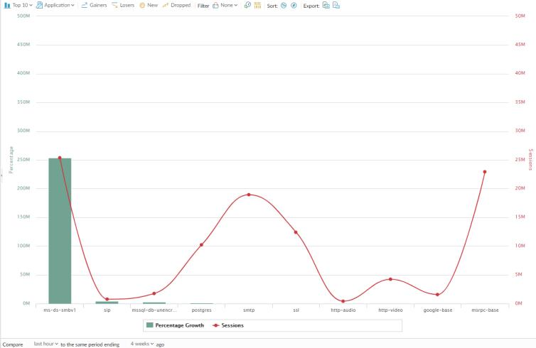

App Scope Change Monitor Report The Change Monitor report displays changes over a specified time period. For example, the figure below displays the top applications that gained in use over the last hour as compared with the last 24-hour period. The top applications are determined by session count and sorted by percentage. App Scope Change Monitor Report  This report contains the following options. Change Monitor Report Options Description Top Bar Top 10 Determines the number of records with the highest measurement included in the chart. Application Determines the type of item reported: Application, Application Category, Source, or Destination. Gainers Displays measurements of items that have increased over the measured period. Losers Displays measurements of items that have decreased over the measured period. New Displays measurements of items that were added over the measure period. Dropped Displays measurements of items that were discontinued over the measure period. Filter Applies a filter to display only the selected item. None displays all entries. Count Sessions and Count Bytes Determines whether to display session or byte information. Sort Determines whether to sort entries by percentage or raw growth. Export Exports the graph as a .png image or as a PDF. Bottom Bar Compare (interval) Specifies the period over which the change measurements are taken. Parent topic Monitor > App Scope
